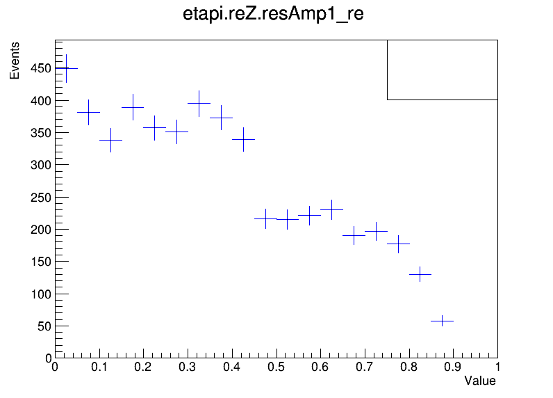

FSROOT Introductory Tutorial#
FSROOT is an alternative way to process ROOT data. It is a c++ library that is also python bound into the PyAmpTools package. This example is a work in progress but it shows a minimal example (thanks to Daniel Barton) of how to make a simple histogram. As I do not personally use FSROOT I cannot guarantee all functionality is python bound but in principle (most?) of it should be and is avaible in the global namespace after running atiSetup.setup(globals(), use_fsroot=True).
import ROOT
from pyamptools import atiSetup
import os
from IPython.display import Image
Welcome to JupyROOT 6.28/06
As always we need to load the environment. Since we are using FSROOT, we need to set use_fsroot=True
PYAMPTOOLS_HOME = os.environ['PYAMPTOOLS_HOME']
atiSetup.setup(globals(), use_fsroot=True)
atiSetup| jupyter-book called python
------------------------------------------------
atiSetup| MPI is disabled
atiSetup| GPU is disabled
------------------------------------------------
atiSetup| Loading library libIUAmpTools.so ............ ON
atiSetup| Loading library libAmpTools.so .............. ON
atiSetup| Loading library libAmpPlotter.so ............ ON
atiSetup| Loading library libAmpsDataIO.so ............ ON
atiSetup| Loading library libFSRoot.so ................ ON
atiSetup| Loading library libAmpsGen.so ............... OFF
------------------------------------------------
------------------------------------------------
atiSetup| Saved aliases found in /w/halld-scshelf2101/lng/WORK/PyAmpTools9/src/pyamptools/.aliases.txt, attempting to load...
atiSetup| minor warning: Unable to alias FSFitFunctions - doesn't exist under ROOT namespace
atiSetup| minor warning: Unable to alias FSFitPrivate - doesn't exist under ROOT namespace
atiSetup| minor warning: Unable to alias omegapiAngles - doesn't exist under ROOT namespace
atiSetup| minor warning: Unable to alias URtypes - doesn't exist under ROOT namespace
atiSetup| minor warning: Unable to alias URConfig - doesn't exist under ROOT namespace
(False, False, 0)
We will reuse the test sample (fake data) and plot the real part of some amplitude since this the only dataset available as part of this package
### Location of the data
fileName = f"{PYAMPTOOLS_HOME}/tests/samples/SIMPLE_EXAMPLE/samples/data_generated_samples_amps.root"
treeName = 'kin'
variable = "etapi.reZ.resAmp1_re" # the "Branch" name in the ROOT tree
### Plotting
plotTitle = 'Real[Amplitude]'
axisLabel = 'Value'
canvas = ROOT.TCanvas('canvas', 'canvas', 800, 600)
h1 = FSHistogram.getTH1F(fileName, treeName, variable, "(20, 0.0, 1.0)", "")
h1.SetStats(False)
h1.SetLineColor(ROOT.kBlue)
h1.GetXaxis().SetTitle(axisLabel)
h1.GetYaxis().SetTitle('Events')
h1.Draw()
legend1 = ROOT.TLegend(0.7, 0.9, 0.9, 0.75)
legend1.Draw('same')
img_path = 'test_etapi_reZ_resAmp1_re.png'
canvas.SaveAs(img_path)
canvas.Close()
display(Image(filename=img_path))
# clean up
os.remove(img_path)

CREATING HISTOGRAM... FSRootHist:000001 OKAY (entries = 10000)
Info in <TCanvas::Print>: png file test_etapi_reZ_resAmp1_re.png has been created